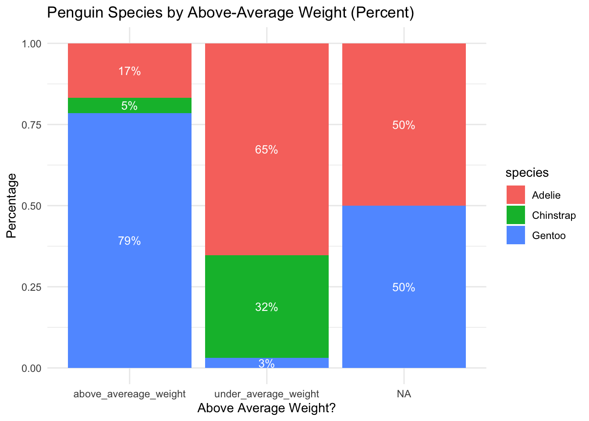
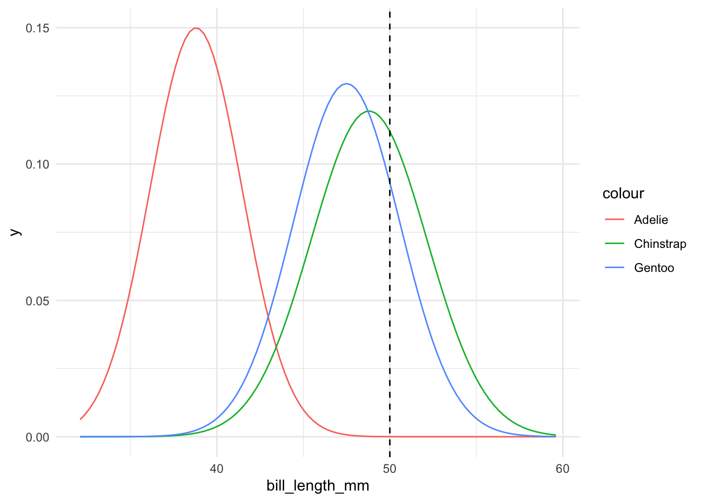
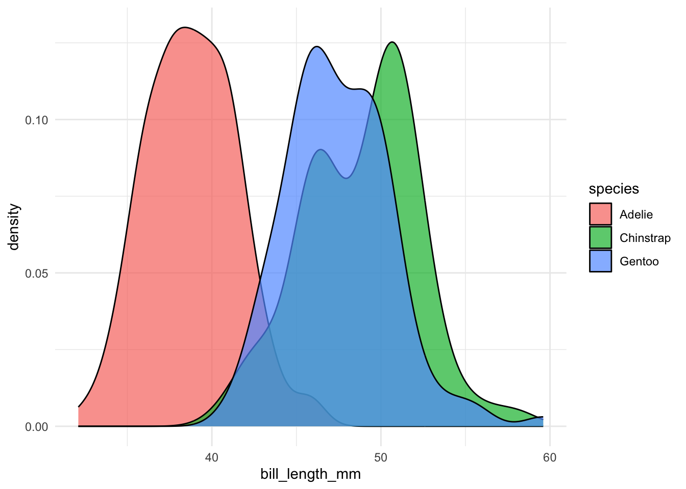
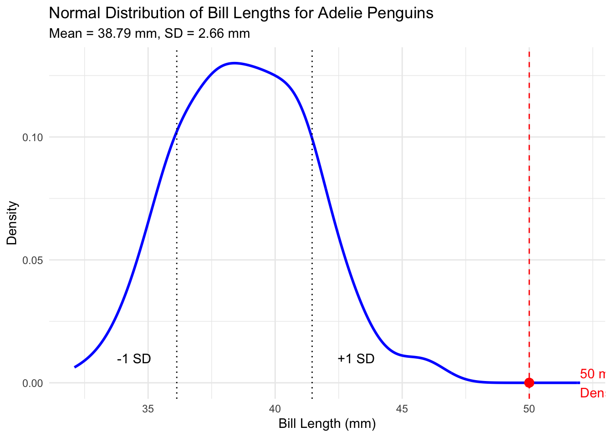
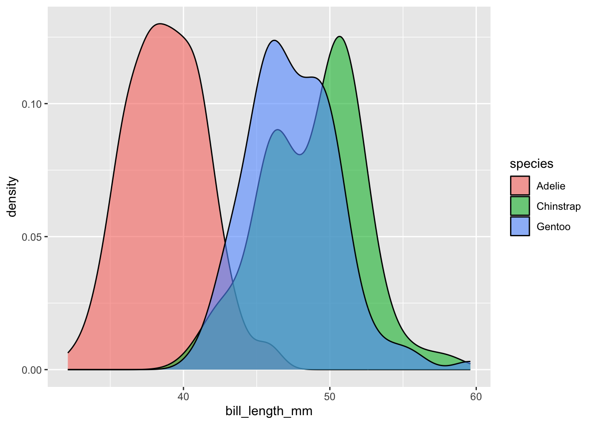
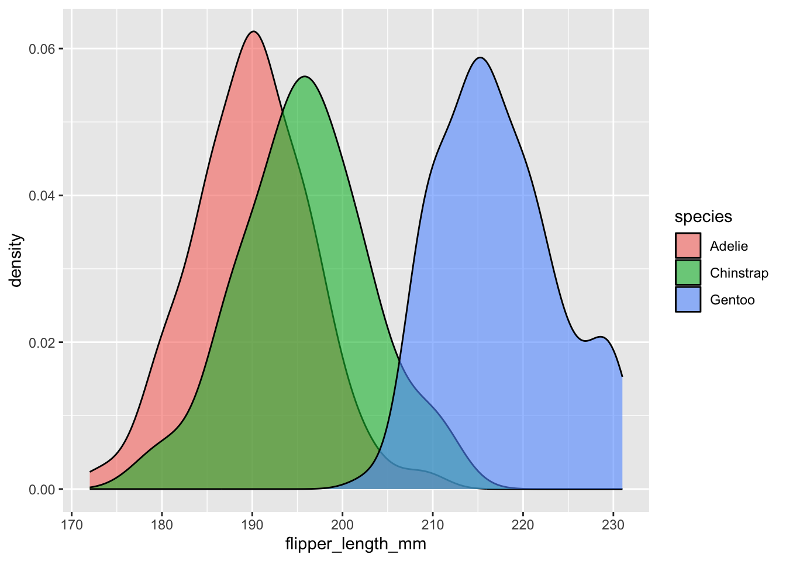
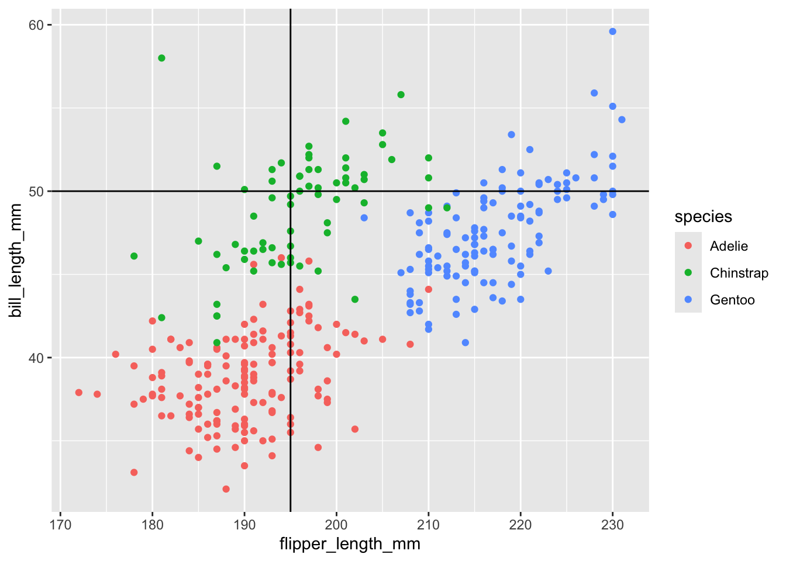

library(tidyverse)
library(bayesrules)
library(janitor)
library(e1071)
library(scales)
options(scipen = 99)naive bayes penguins
Libraries
Story
We’ll start our naive Bayes classification with just a single penguin. Suppose an Antarctic researcher comes across a penguin that weighs less than 4200g with a 195mm-long flipper and 50mm-long bill. Our goal is to help this researcher identify the species of this penguin, Adelie, Chinstrap, or Gentoo.
Challenge - Let’s Plot!
Take 10 minutes to make a visualization that will help the researcher determine the species based on the characteristics described above
data(penguins_bayes)
penguins <- penguins_bayes %>%
mutate(above_average_weight = if_else(above_average_weight == 1, "above_avereage_weight", "under_average_weight"))Big picture
Why use naive bayes classification instead of bayesian logistic regression
- 3 classes/possible values in target variable (species)
What makes naive bayes “naive”
It assumes quantitative predictors are normally distributed
It assumes predictive features are not correlated with each other
One Categorical predictor
- Penguin is “below average weight”
P(B|A)
- P(Chinstrap | below average weight)
- P(Adelie | below average weight)
- P(Gentoo | below average weight)
penguins %>%
tabyl(above_average_weight, species) %>%
adorn_percentages("row") above_average_weight Adelie Chinstrap Gentoo
above_avereage_weight 0.1677852 0.04697987 0.78523490
under_average_weight 0.6528497 0.31606218 0.03108808
<NA> 0.5000000 0.00000000 0.50000000probability_chinstrap_given_below_average_weight <- 0.65penguins %>%
count(above_average_weight, species) %>%
group_by(above_average_weight) %>%
mutate(percent = n / sum(n)) %>%
ggplot(aes(x = above_average_weight, y = percent, fill = species)) +
geom_col() +
geom_text(aes(label = scales::percent(percent, accuracy = 1)),
position = position_stack(vjust = 0.5), color = "white", size = 3.5) +
labs(
title = "Penguin Species by Above-Average Weight (Percent)",
x = "Above Average Weight?",
y = "Percentage"
) +
theme_minimal()
One Quantitative Predictor
- Penguin has a billlength of 50 mm
We have to first find the mean and standard deviation for each species
penguins %>%
group_by(species) %>%
summarize(mean = mean(bill_length_mm, na.rm = TRUE),
sd = sd(bill_length_mm, na.rm = TRUE))# A tibble: 3 × 3
species mean sd
<fct> <dbl> <dbl>
1 Adelie 38.8 2.66
2 Chinstrap 48.8 3.34
3 Gentoo 47.5 3.08Let’s plot this!
ggplot(penguins, aes(x = bill_length_mm, color = species)) +
stat_function(fun = dnorm, args = list(mean = 38.8, sd = 2.66),
aes(color = "Adelie")) +
stat_function(fun = dnorm, args = list(mean = 48.8, sd = 3.34),
aes(color = "Chinstrap")) +
stat_function(fun = dnorm, args = list(mean = 47.5, sd = 3.08),
aes(color = "Gentoo")) +
geom_vline(xintercept = 50, linetype = "dashed") +
theme_minimal()
Note on one naive bayes assumption - assuming normal distributions
- The bill length distributions actually look like this
ggplot(penguins, aes(x = bill_length_mm, fill = species)) +
geom_density(alpha = 0.7) +
theme_minimal()Warning: Removed 2 rows containing non-finite outside the scale range
(`stat_density()`).
We need to evaluate the likelihood of observing a 50mm-long bill among each of the three species
Adelie
dnorm(50, mean = 38.8, sd = 2.66)[1] 0.00002119955likelihood_adelie_50mm_bill <- 0.00002119955Question - what is this value? Let’s visualize
adelie_penguins <- subset(penguins, species == "Adelie")
# Calculate mean and standard deviation of bill_length_mm for Adelie penguins
mean_bill<- mean(adelie_penguins$bill_length_mm, na.rm = TRUE)
sd_bill <- sd(adelie_penguins$bill_length_mm, na.rm = TRUE)
# Value to highlight (50 mm)
highlight_value <- 50
highlight_density <- dnorm(highlight_value, mean = mean_bill, sd = sd_bill)
# Plot the normal distribution with a point for 50 mm and 1 standard deviation lines
ggplot(adelie_penguins, aes(x = bill_length_mm)) +
geom_density(color = "blue", size = 1) + # Plot the density curve
# Highlight the point for 50 mm
geom_point(aes(x = highlight_value, y = highlight_density),
color = "red", size = 3) +
# Add a vertical dashed line for 50 mm
geom_vline(xintercept = highlight_value, linetype = "dashed", color = "red") +
# Add vertical lines for 1 standard deviation from the mean
geom_vline(xintercept = mean_bill + sd_bill, linetype = "dotted", color = "black") +
geom_vline(xintercept = mean_bill - sd_bill, linetype = "dotted", color = "black") +
# Add annotations for standard deviation lines
annotate("text", x = mean_bill + sd_bill + 1, y = 0.01,
label = "+1 SD", color = "black", hjust = 0) +
annotate("text", x = mean_bill - sd_bill - 1, y = 0.01,
label = "-1 SD", color = "black", hjust = 1) +
# Add labels and title
labs(title = "Normal Distribution of Bill Lengths for Adelie Penguins",
subtitle = paste("Mean =", round(mean_bill, 2), "mm, SD =", round(sd_bill, 2), "mm"),
x = "Bill Length (mm)", y = "Density") +
# Add annotation for 150 mm
annotate("text", x = highlight_value + 2, y = highlight_density,
label = paste0("50 mm\nDensity: ", round(highlight_density, 5)),
hjust = 0, color = "red") +
# Minimal theme for cleaner look
theme_minimal()Warning: Using `size` aesthetic for lines was deprecated in ggplot2 3.4.0.
ℹ Please use `linewidth` instead.Warning in geom_point(aes(x = highlight_value, y = highlight_density), color = "red", : All aesthetics have length 1, but the data has 152 rows.
ℹ Please consider using `annotate()` or provide this layer with data containing
a single row.Warning: Removed 1 row containing non-finite outside the scale range
(`stat_density()`).
Chinstrap
dnorm(50, mean = 48.8, sd = 3.34)[1] 0.1119782likelihood_chinstrap_50mm_bill <- 0.1119782Gentoo
dnorm(50, mean = 47.5, sd = 3.08)[1] 0.09317395likelihood_gentoo_50mm_bill <- 0.09317395Prior Probabilities for weighting
penguins %>%
tabyl(species) species n percent
Adelie 152 0.4418605
Chinstrap 68 0.1976744
Gentoo 124 0.3604651prior_probability_adelie <- 0.44
prior_probability_chinstrap <- 0.2
prior_probability_gentoo <- 0.36(prior_probability_adelie * likelihood_adelie_50mm_bill) + (prior_probability_chinstrap * likelihood_chinstrap_50mm_bill) +
(prior_probability_gentoo* likelihood_gentoo_50mm_bill)[1] 0.05594759species_bill_length_weighted_likelihood <- 0.05594759P(Adelie | 50mm bill length)
(prior_probability_adelie * likelihood_adelie_50mm_bill) / species_bill_length_weighted_likelihood[1] 0.0001667239P(Chinstrap | 50mm bill length)
(prior_probability_chinstrap * likelihood_chinstrap_50mm_bill) / species_bill_length_weighted_likelihood[1] 0.4002968P(Gentoo| 50mm bill length)
(prior_probability_gentoo * likelihood_gentoo_50mm_bill) / species_bill_length_weighted_likelihood[1] 0.5995365Two Predictors
Consider the information that our penguin has a bill length of X2=50mm and a flipper length of X3=195mm. Either one of these measurements alone might lead to a misclassification. Just as it’s tough to distinguish between the Chinstrap and Gentoo penguins based on their bill lengths alone, it’s tough to distinguish between the Chinstrap and Adelie penguins based on their flipper lengths alone
ggplot(penguins, aes(x = bill_length_mm, fill = species)) +
geom_density(alpha = 0.6)Warning: Removed 2 rows containing non-finite outside the scale range
(`stat_density()`).
ggplot(penguins, aes(x = flipper_length_mm, fill = species)) +
geom_density(alpha = 0.6)Warning: Removed 2 rows containing non-finite outside the scale range
(`stat_density()`).
BUT the species are fairly distinguishable when we combine the information about bill and flipper lengths. Our penguin with a 50mm-long bill and 195mm-long flipper, represented at the intersection of the dashed lines in Figure 14.5, now lies squarely among the Chinstrap observations
ggplot(penguins,
aes(x = flipper_length_mm, y = bill_length_mm, color = species)) +
geom_point() +
geom_hline(yintercept = 50) +
geom_vline(xintercept = 195)Warning: Removed 2 rows containing missing values or values outside the scale range
(`geom_point()`).
Likelihoods for flipper length
penguins %>%
group_by(species) %>%
summarize(mean = mean(flipper_length_mm, na.rm = TRUE),
sd = sd(flipper_length_mm, na.rm = TRUE))# A tibble: 3 × 3
species mean sd
<fct> <dbl> <dbl>
1 Adelie 190. 6.54
2 Chinstrap 196. 7.13
3 Gentoo 217. 6.48Adelie
dnorm(195, mean = 190, sd = 6.54)[1] 0.04554175likelihood_adelie_195_mm_flipper <- 0.04554175Chinstrap
dnorm(195, mean = 196, sd = 7.13)[1] 0.05540502likelihood_chinstrap_195_mm_flipper <- 0.05540502Gentoo
dnorm(195, mean = 217, sd = 6.48)[1] 0.0001933746likelihood_gentoo_195_mm_flipper <- 0.0001933746Calculating probabilities
(likelihood_adelie_50mm_bill * likelihood_adelie_195_mm_flipper * prior_probability_adelie) +
(likelihood_chinstrap_50mm_bill * likelihood_chinstrap_195_mm_flipper * prior_probability_chinstrap) +
(likelihood_gentoo_50mm_bill * likelihood_gentoo_195_mm_flipper * prior_probability_gentoo) [1] 0.001247742flipper_length_bill_length_species_weighted_likelihood <- 0.001247742Probability Adelie
(prior_probability_adelie * likelihood_adelie_195_mm_flipper * likelihood_adelie_50mm_bill) / flipper_length_bill_length_species_weighted_likelihood[1] 0.0003404585Probability Chinstrap
(prior_probability_chinstrap * likelihood_chinstrap_195_mm_flipper * likelihood_chinstrap_50mm_bill) / flipper_length_bill_length_species_weighted_likelihood[1] 0.9944611Probability Gentoo
(prior_probability_gentoo * likelihood_gentoo_195_mm_flipper * likelihood_gentoo_50mm_bill) / flipper_length_bill_length_species_weighted_likelihood[1] 0.005198423That was a fair amount of math…
Naive Bayes Classification!
naive_model <- naiveBayes(species ~ flipper_length_mm + bill_length_mm + above_average_weight, data = penguins)Our penguin
our_penguin <- data.frame(bill_length_mm = 50, flipper_length_mm = 195, above_average_weight = "no")Ask our model to make a prediction of what species our penguin is
predict(naive_model, newdata = our_penguin, type = "raw") Adelie Chinstrap Gentoo
[1,] 0.0003445688 0.9948681 0.004787365Test our model fro accuracy with confusion matrix
penguins <- penguins %>%
mutate(predicted_species = predict(naive_model, newdata = .))penguins %>%
tabyl(species, predicted_species) %>%
adorn_percentages("row") %>%
adorn_pct_formatting(digits = 2) %>%
adorn_ns species Adelie Chinstrap Gentoo
Adelie 96.05% (146) 2.63% (4) 1.32% (2)
Chinstrap 7.35% (5) 86.76% (59) 5.88% (4)
Gentoo 0.81% (1) 4.03% (5) 95.16% (118)naive_model
Naive Bayes Classifier for Discrete Predictors
Call:
naiveBayes.default(x = X, y = Y, laplace = laplace)
A-priori probabilities:
Y
Adelie Chinstrap Gentoo
0.4418605 0.1976744 0.3604651
Conditional probabilities:
flipper_length_mm
Y [,1] [,2]
Adelie 189.9536 6.539457
Chinstrap 195.8235 7.131894
Gentoo 217.1870 6.484976
bill_length_mm
Y [,1] [,2]
Adelie 38.79139 2.663405
Chinstrap 48.83382 3.339256
Gentoo 47.50488 3.081857
above_average_weight
Y above_avereage_weight under_average_weight
Adelie 0.16556291 0.83443709
Chinstrap 0.10294118 0.89705882
Gentoo 0.95121951 0.04878049Challenge
Exercise 14.10 The pulse_of_the_nation data in the bayesrules package contains responses of 1000 adults to a wide-ranging survey. In one question, respondents were asked about their belief in climate_change, selecting from the following options: climate change is Not Real at All, Real but not Caused by People, or Real and Caused by People. In this open-ended exercise, complete a naive Bayesian analysis of a person’s belief in climate_change, selecting a variety of possible predictors that are of interest to you.
First, use the
naiveBayes()function first and examine resultsThen, show the math similar to how we did above to confirm your results
data("pulse_of_the_nation")